Tyco/AMP连接器（102路直列式）
- • EL-38125-550端子拆卸工具组件
- • EL-38125-580端子拆卸工具组件
- • J-38125-11A端子拆卸工具
- • J-38125-212端子拆卸工具
- • J-38125-216端子拆卸工具
- • J-38125-221端子拆卸工具
- • J-38125-560端子拆卸工具
- • J-38125-566端子拆卸工具
专用工具
关于当地同等工具，参见“专用工具”。
端子拆卸程序

装配位置典型连接器的视图。
-
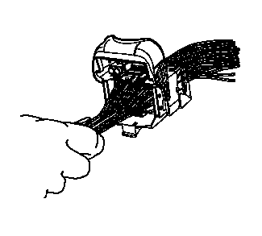1.从连接器体把锁杆拉到90度位置。
-
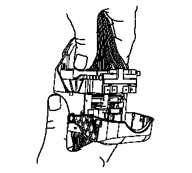2.锁杆在90度位置，插头连接器体分离后，它可以向外滑，以便拆卸。
-
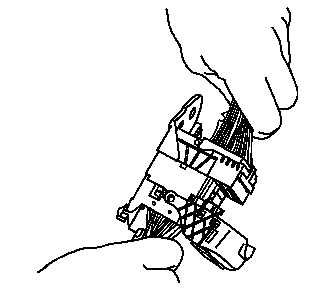3.把插头连接器体从导板上滑出。
-
 4.使用端子拆卸工具J-38125-11A或同等工具，从连接器体上拆下端子定位器。注意:在装配过程中，如果任何端子没有完全固定，端子定位器 (TPA) 将不会完全固定。
4.使用端子拆卸工具J-38125-11A或同等工具，从连接器体上拆下端子定位器。注意:在装配过程中，如果任何端子没有完全固定，端子定位器 (TPA) 将不会完全固定。 -
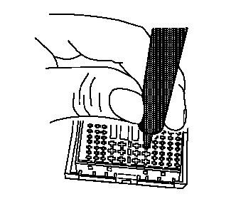5.用端子拆卸工具J-38125-566，在待拆卸端子的每一侧，将突起压入孔内，从而松开锁紧凸舌，并将端子拉出连接器体。
-
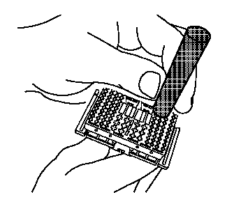6.用端子拆卸工具J-38125-560，在待拆卸端子的每一侧，将突起压入孔内，从而松开锁紧凸舌，并将端子拉出连接器体。
-
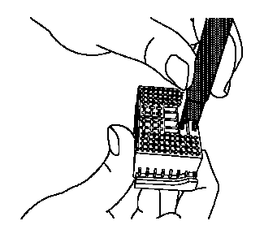7.用端子拆卸工具J-38125-221，在待拆卸端子的每一侧，将突起压入孔内，从而松开锁紧凸舌，并将端子拉出连接器体。
-
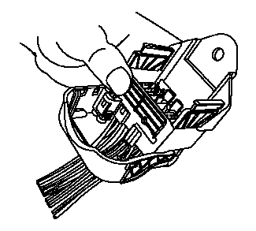8.插座连接器体可能有一个附加的连接器钩在壳体的边缘。用端子拆卸工具J-38125-11A或同等工具，松开锁舌，并将连接器从母体上滑出。
-
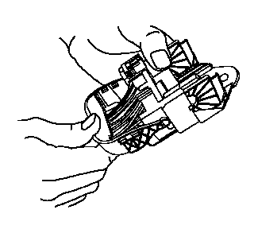9.从连接位置移动锁杆180度。
-
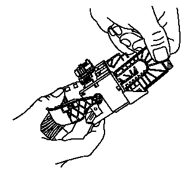10.锁杆在180度位置，导板可从连接器体上拆下。
-
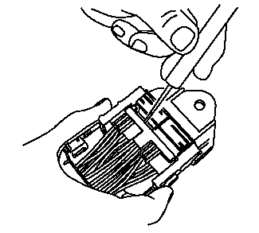11.使用端子拆卸工具J-38125-11A或同等工具，从连接器体上拆下端子定位器。注意:在装配过程中，如果任何端子没有完全固定，端子定位器不会完全固定。
-
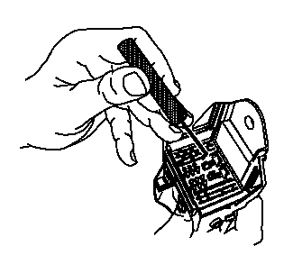12.使用端子拆卸工具J-38125-216，越过端子，将端子板从连接器体孔提起。
-
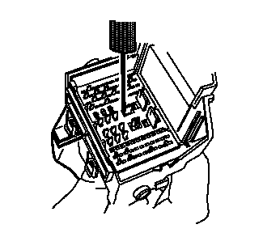13.端子板将会在各拐角处稍微有点卡滞。
-
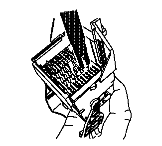14.用端子拆卸工具J-38125-221，在待拆卸端子的每一侧，将突起压入孔内，从而松开锁紧凸舌，并将端子拉出连接器体。
-
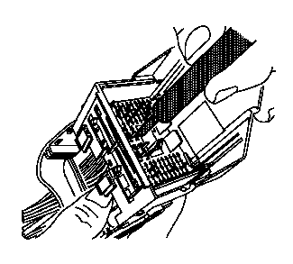15.用端子拆卸工具J-38125-212，在待拆卸端子的每一侧，将突起压入孔内，从而松开锁紧凸舌，并将端子拉出连接器体。
-
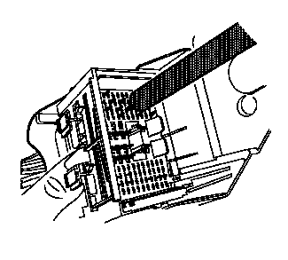16.用端子拆卸工具J-38125-560，在待拆卸端子的每一侧，将突起压入孔内，从而松开锁紧凸舌，并将端子拉出连接器体。
- 17.把端子板压回插座连接器上的预设位置。板件将会在各拐角处稍微有点卡滞。
-
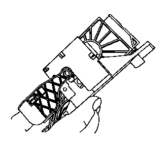18.锁杆在180位置，对准导板，与锁杆上的轮齿相啮合。
- 19.插头连接器体滑入回导板上。
- 20.锁杆在90度位置，插头连接器体连接后，它可以向内滑入，以便组装。
-
21.把杆移到锁止位置或者装配位置。这将把插头连接器向下拉入插座连接器。
- 22.按照下面的“修理连接器端子（端子修理）、修理连接器端子（终端引线修理）”程序修理端子。
- 23.将修好的端子重新安装回孔中。重复诊断程序以检验修理效果，并重新连接连接器壳体。